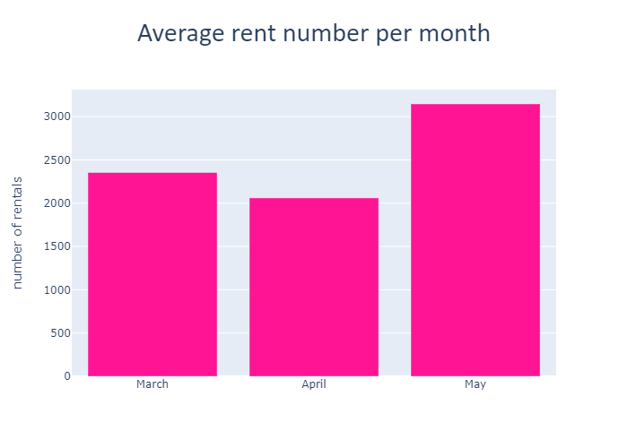
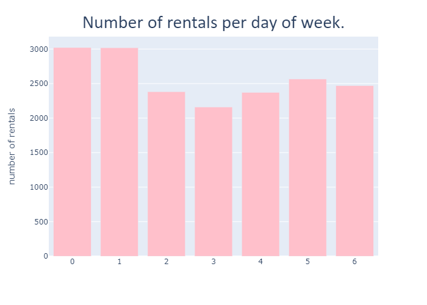
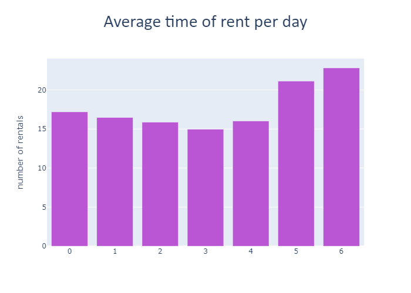
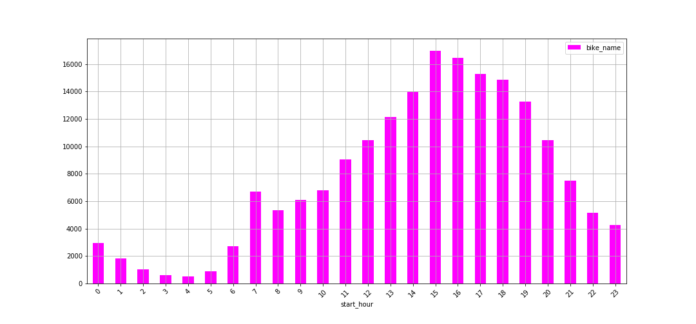
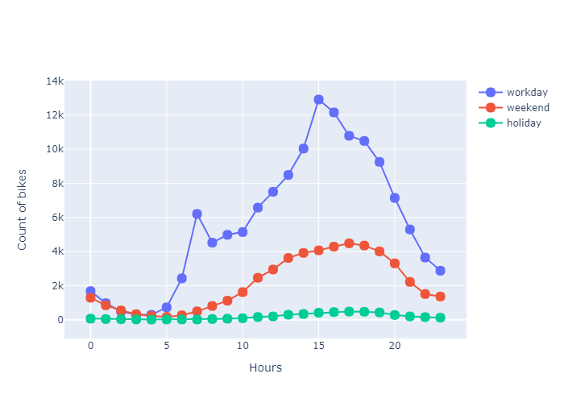

PROJECT CITY BIKE LUBLIN
| Main | Project | Contact |
The bikes were available by 72 days
The number of available bikes: 850 and they were rented 185 291 times
Every bike was average rented 217 times during 3 months
The busiest bike visited 79 return stations and 75 departure stations
The average time of rent: 17.75min
Count of rentals under 20 minutes: 148309 which is more than half all rentals
Bikes were rented every 33sec.
The most popular month was May, and the most popular day was 2017-04-02, it was Sunday

The average rent number per day of week was the highest on Monday and Tuesday

*0 - Monday,1 - Tuesday...6 - Sunday
The average time of rent per day of week was the highest in Saturday (21.13) and Sunday (22.81)

The most popular hours for rent was beetwen 3 pm and 4 pm

From monday to Friday beetwen 6 nad 8 a.m people usually go to work or to school and we can see it on the charts.
At the same time there are fewer rentals on Saturday and Sunday.
The most popular hour of the week is beetwen 3 and 4 p.m (when people return home), in the weekend it is beetwen 5 and 6 p.m
